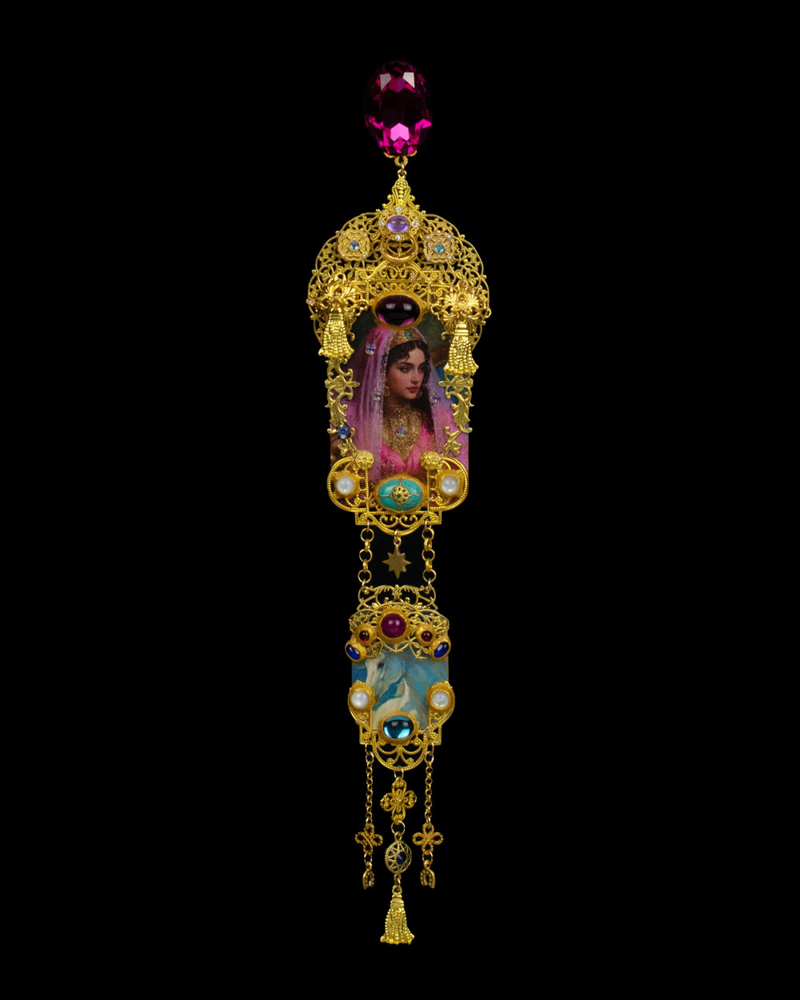
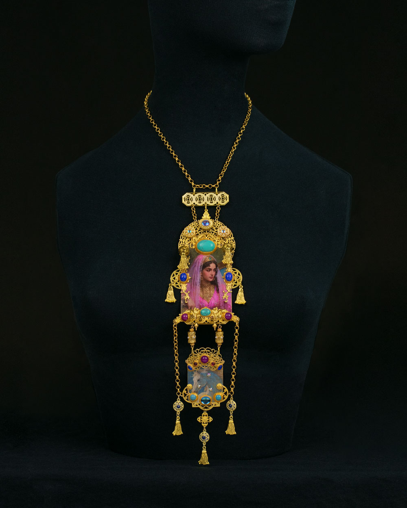

1001 Nights — I Inspired by Orientalist Dreams, Asymmetrical Statement Earrings “1001 Nights — An Irresistible World of Excess” See More →
 1001 Nights — II Inspired by Orientalist Dreams, Statement Mono Earring “1001 Nights — An Irresistible World of Excess” See More →
 1001 Nights — III Inspired by Orientalist Dreams, Statement Necklace “1001 Nights — Gilded Captivity” See More →